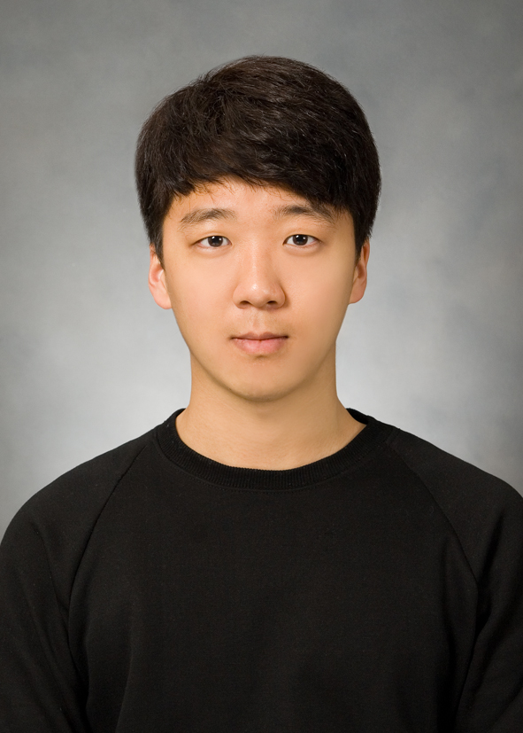

Hi, I'm a Master's student working with Gunhee Kim at Seoul National University.
My academic interest lies in machine learning, game optimization, and theoretical multi-agent learning.
Simply put, I study how and when multiple competitive neural networks would (quickly) converge to their (local) Nash equilibrium.
(Résumé →)
Education
Publications
-
On Convergence of Lookahead in Smooth Games
Junsoo Ha, Gunhee Kim.
International Conference on Artificial Intelligence and Statistics (AISTATS), 2022.
[PDF]
-
A Neural Dicihlet Process Mixture Model for Task-Free Continual Learning
Soochan Lee, Junsoo Ha, Dongsu Zhang, Gunhee Kim.
International Conference on Learning Representations (ICLR), 2020.
[PDF]
[Code]
-
Harmonizing Maximum Likelihood with GANs for Multimodal Conditional Generation
Soochan Lee, Junsoo Ha, Gunhee Kim.
International Conference on Learning Representations (ICLR), 2019.
[PDF]
[Code]
Professional Experience
I used to be a software engineer back before my academic career.
I still love writing atomic programs that have a single responsibility and minimal side-effects.
-
Buzzni (Seoul, Korea. Mar 2017 - July 2017) / Backend Software Engineer @ Python
-
Geopia (Seoul, Korea. Apr 2015 - Feb 2017) / Full-Stack Software Developer @ PHP, Java
-
Nexol System (Seoul, Korea. Jan 2015 - Mar 2015) / Software Development Intern @ C#, Java
-
LG Electronics (Seoul, Korea. Jul 2014 - Aug 2014) / Software Delveopment Intern @ Python
Profiles
You can browse my profiles in the following social media:
Email is the best way to contact me: junsoo.ha@vision.snu.ac.kr